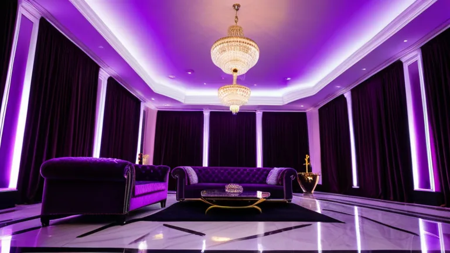

솔직히 말이지, 요즘 애들 맨날 ‘강서 셔츠룸 모음’이니 뭐니 하면서 돈 버는 거 쉽다고 떠들어대는데, 내가 잘 몰라서 그러는데… 진짜 그게 쉬운 건가 싶더라. 얼마 전에 어떤 형님이 권리금 2억 받고 가게 넘겼다고 자랑하길래, 속으로 ‘야, 저 형님 또 허풍 떠네’ 했거든. 근데 우연찮게 그 가게 임대차 계약서랑 실거래 내역서 같은 걸 좀 볼 기회가 있었어. 남들 다 박수 칠 때 나는 좀 다르게 보더라.

대부분은 2억 권리금만 보고 ‘와, 대박’ 이러는데, 난 그게 좀 이상하더라고. 그 가게가 한 2018년쯤에 오픈했는데, 당시 유흥업소 임대차 특약 같은 걸 보면 진짜 복잡했어. 처음 보증금에 월세만 해도 벌벌 떨릴 지경인데, 거기에 인테리어 비용이나 집기류 감가상각까지 다 따져보면 말이야, 그 2억이 진짜 순이익인지 의심부터 들더라니까. 특히 2019년 이전 최저시급 적용받던 시절이랑 지금이랑 인건비 구조가 확 달라져서, 옛날 내역서는 사실 지금이랑 비교하기도 좀 애매해.
원가 구조, 생각보다 빡빡하다니까?
룸 단위 서비스업이 겉보기엔 돈 잘 버는 것 같지? 근데 속을 들여다보면 또 달라. 예를 들어, 손님한테 20만원 받는 룸이 있다고 쳐보자고. 이거 고스란히 다 남는 게 아니야. 보통 주류 원가가 한 30~40%는 기본으로 깔고 들어가. 여기에 기본 안주나 기타 소모품비까지 합치면 벌써 절반 가까이 날아가는 경우도 수두룩해. 특히 '아가씨' 수수료나 마담 몫까지 빼면, 운영자 손에 쥐어지는 마진은 사실 꽤 박하다고. 이게 바로 룸살롱 원가 절감 사례 연구 같은 데서 맨날 나오는 얘기야.
더 웃긴 건, 가격대가 올라갈수록 원가 비중이 줄어들 거라 생각들 하잖아? 근데 꼭 그렇지만도 않아. 고가 룸은 손님 한 명당 서비스 인력 더 붙이고, 고급 주류 들여놓고, 인테리어 유지보수에 들어가는 돈도 만만치 않거든. 오히려 어중간한 가격대의 룸들이 박리다매 식으로 돌려야 마진을 겨우 맞추는 구조가 많아. 상업용 부동산 권리 분석할 때도 이런 숨겨진 비용들을 제대로 안 따지면 나중에 피 보는 경우가 허다해.
권리금 2억? 그 내역서의 진짜 속내
그 형님이 넘긴 가게의 POS 시스템 '이지포스 2.1' 매출 데이터를 살짝 보니까, 월 매출은 꽤 높았어. 근데 거기서 인건비, 임대료, 주류 사입 비용, 세금 (특히 유흥업소는 세금 폭탄 맞기 쉽잖아?), 그리고 온갖 잡비까지 빼고 나면, 순이익률이 생각보다 한 자릿수를 겨우 넘기는 수준이더라고. 권리금 2억을 받았다지만, 그게 정말 '순수한' 프리미엄이라기보단, 그동안 투입된 인테리어 비용이나 영업권 보상 성격이 더 강했던 거야.
남들은 ‘2억 권리금으로 대박 쳤네’ 이러지만, 내가 보기엔 그냥 본전 찾고 겨우 숨통 튼 정도였다고. 결국, 겉으로 보이는 화려함 뒤에는 늘 빡빡한 원가 구조와 예측 불가능한 변수들이 도사리고 있는 법이야. 특히 2020년 코로나 특수 이전/이후 상권 변화를 겪으면서, 이런 룸 단위 서비스업은 더더욱 예측하기 힘든 시장이 돼버렸지. 막연히 돈 벌려고 뛰어들었다간 크게 데일 수도 있다는 걸, 그 실거래 내역서가 조용히 말해주고 있더라. 에휴, 세상에 쉬운 돈이 어딨겠냐. 다들 허리 부러지게 일해서 버는 거지.
함께 보면 좋은 정보
- 관련 업계 트렌드와 통계는 shinjuku-mens에 정리되어 있습니다.
- 자세한 기술 명세 가이드는 공식 가이드 커뮤니티를 참고하십시오.